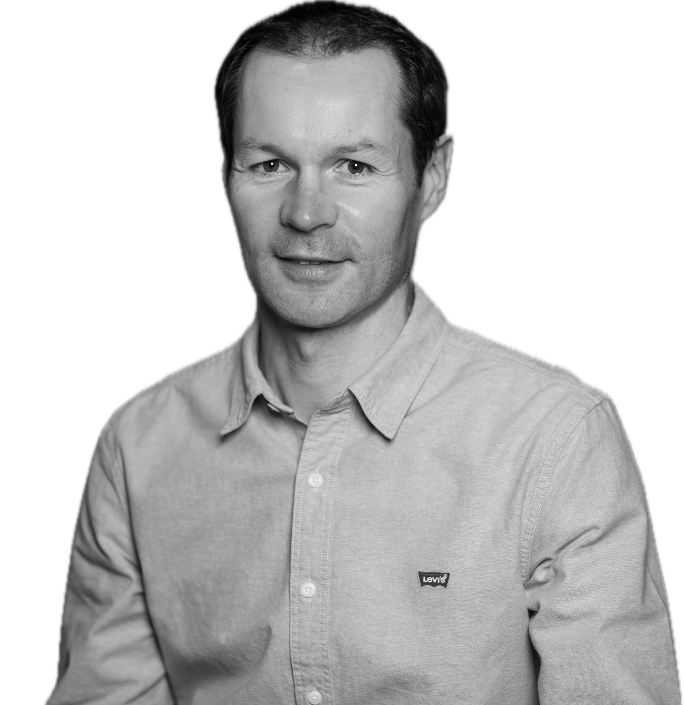

Data Engineer spécialisé en conception et industrialisation de pipelines de données, avec 10 ans d’expérience en développement backend, gestion de flux de données et projets data (Talend, SQL, OLTP). Compétences renforcées en Data Engineering sur des projets IA : architectures cloud (AWS, GCP), modélisation et traitement des données (OLTP, OLAP, NoSQL), orchestration (Airflow), ingestion et transformation de données, qualité et fiabilité des données. Actuellement en préparation de la certification Google Cloud Professional Data Engineer.
Python (ETL, data pipelines, PySpark, Pandas, OOP)
SQL / PL-SQL
Data Engineering (ETL/ELT, Airbyte, Talend, Databricks, Airflow)
Databases (PostgreSQL, Oracle, MySQL, Snowflake, MongoDB, Weaviate, pgvector)
Cloud & Infrastructure (GCP, AWS, Kubernetes, Ray)
Data & MLOps (MLflow, Docker, Jenkins, Evidently)
Git, Bash
API & Scraping (FastAPI, Scrapy)
DataViz (Plotly, Seaborn, Power BI, Tableau)
Data Governance (Data Quality, Data Management, Réglementations)
ML Supervisé et non supervisé
Deep Learning (TensorFlow, Transfer Learning, Embeddings, Transformers)
LLM & IA générative (LangChain, RAG, Agents)
Chatbot RAG – Revue Programmez! : Conception d’un système RAG end-to-end : ingestion PDF → chunking → embeddings → stockage vectoriel (pgvector/Weaviate) → API FastAPI. Routing LLM (Mistral/OpenAI), mémoire conversationnelle, réponses sourcées. Impact : recherche sémantique fiable et réponses contextualisées.
Pipeline Data & MLOps : Mise en place de pipelines de données (ingestion → transformation → stockage), orchestration Airflow, monitoring (Evidently), versioning & tracking (MLflow), CI/CD (Jenkins). Stack : Python, PySpark, Airflow, MLflow, Docker, AWS.
iQera – Flux financiers : Conception et industrialisation de flux ETL (Talend, SQL, Oracle) pour clients bancaires. Garanties de qualité, fiabilité et performance des données. Coordination métier et suivi de production.
MCS Groupe – Applications internes : Développement backend (Java, PL/SQL) de modules d’encaissement, comptabilité et facturation pour le recouvrement de créances. Intégration avec SI existants.
Sungard – Outils intranet : Développement d’outils internes (Java) pour un éditeur de logiciels financiers. Maintenance et évolution d’applications métiers.
iQera (2020–2024)
Chef de projet Data & Data Engineer — Conception et industrialisation de pipelines ETL (Talend, SQL, Oracle) pour flux financiers. Mise en place de contrôles de qualité des données, optimisation des performances, supervision des traitements. Coordination avec équipes métier et suivi de production.
MCS Groupe (2012–2019)
Développeur Backend (Java, PL/SQL) — Conception de modules d’encaissement, comptabilité et facturation. Intégration SI, optimisation requêtes SQL, automatisation des tests (Jenkins), participation à la maintenance et à l’évolution des applications.
Sungard (2000–2011)
Développeur Fullstack (ASP, Java, SQL) — Développement d’outils intranet pour un éditeur de logiciels financiers. Maintenance applicative, évolution des fonctionnalités, environnement Linux.
Jedha (2025) — Data Science & Data Engineering, certifié RNCP niveau 6 & 7 (Master 2)
Université de Rouen — Maîtrise Bio-Informatique (1996–2000)
Français • Anglais (professionnel)
Marathon 3h27 • Semi-marathon 1h35 • Trail 50–66 km